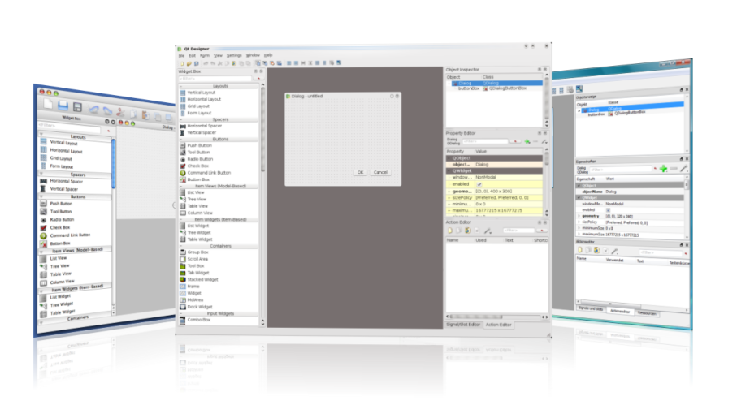

Qt Designer Manual
Qt Designer is the Qt tool for designing and building graphical user interfaces (GUIs) with Qt Widgets. You can compose and customize your windows or dialogs in a what-you-see-is-what-you-get (WYSIWYG) manner, and test them using different styles and resolutions.
Widgets and forms created with Qt Designer integrate seamlessly with programmed code, using Qt's signals and slots mechanism, so that you can easily assign behavior to graphical elements. All properties set in Qt Designer can be changed dynamically within the code. Furthermore, features like widget promotion and custom plugins allow you to use your own components with Qt Designer.
Note: You have the option of using Qt Quick for user interface design rather than widgets. It is a much easier way to write many kinds of applications. It enables a completely customizable appearance, touch-reactive elements, and smooth animated transitions, backed up by the power of OpenGL graphics acceleration.
If you are new to Qt Designer, you can take a look at the Getting To Know Qt Designer document. For a quick tutorial on how to use Qt Designer, refer to A Quick Start to Qt Designer.

Table of Contents
- Qt Designer's Editing Modes
- Using Layouts in Qt Designer
- Saving, Previewing and Printing Forms in Qt Designer
- Using Containers in Qt Designer
- Creating Main Windows in Qt Designer
- Editing Resources with Qt Designer
- Using Stylesheets with Qt Designer
- Using a Designer UI File in Your Application
- Advanced Use
Legal Notices
Some source code in Qt Designer is licensed under specific highly permissive licenses from the original authors. The Qt team gratefully acknowledges these contributions to Qt Designer and all uses of Qt Designer should also acknowledge these contributions and quote the following license statements in an appendix to the documentation.